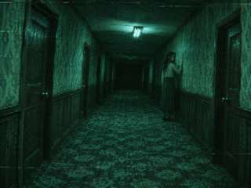
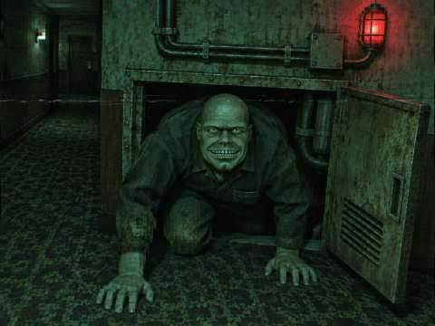
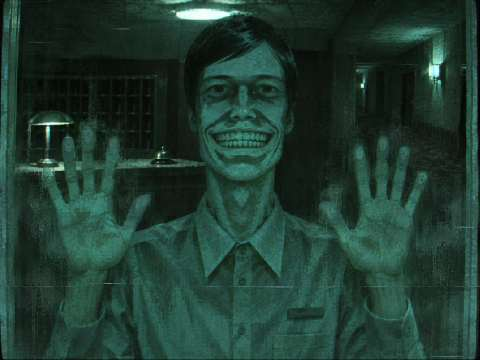
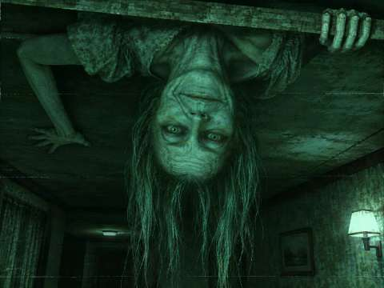

01 · 走廊回头
背对镜头站在门边，身体没有转过来，只有头朝后看。

02 · 柜中爬出
从低矮的维修柜里探出上半身，双手撑地，脸朝上看。

03 · 贴住玻璃
双手贴在镜头前的玻璃上，正面站立，保持僵硬的笑容。

04 · 天花板倒悬
手臂撑住横梁，头和身体倒着探下来，头发自然下垂。
以下四张为游戏内使用的低清显示图，包含恐怖面孔和后半段画面。点击图片可查看原始大图。本页不会播放声音或自动弹出惊吓。

背对镜头站在门边，身体没有转过来，只有头朝后看。

从低矮的维修柜里探出上半身，双手撑地，脸朝上看。

双手贴在镜头前的玻璃上，正面站立，保持僵硬的笑容。

手臂撑住横梁，头和身体倒着探下来，头发自然下垂。
以上为虚构人物的生成插图，并非真实酒店住客或事件照片。